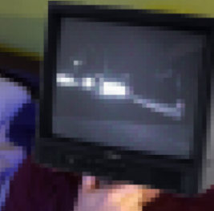
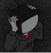

My name is Andon Arnold, I am 16 and my birthday is 05/16. My hobbies include Gaming,DND,a little voice acting,and just hanging with friends.
My goal that I want to achieve out of this lab is to be able to code and design games,whether that be extremely small and short games,or high-rated ones.
Some of my past times is obviously playing games, I enjoy playing dnd/dming for dnd, and I wish to at some point begin streaming games that I play.
Some of favorite games are Genshin Impact, Hollow Knight, Spiritfarer, Minecraft, Super Smash Bros., and a few others.
I have had many ideas for games that i want to try designing and developing and I am hoping to get enough knowledge and help through this program to see that through.

Heres one of my favorite videos.